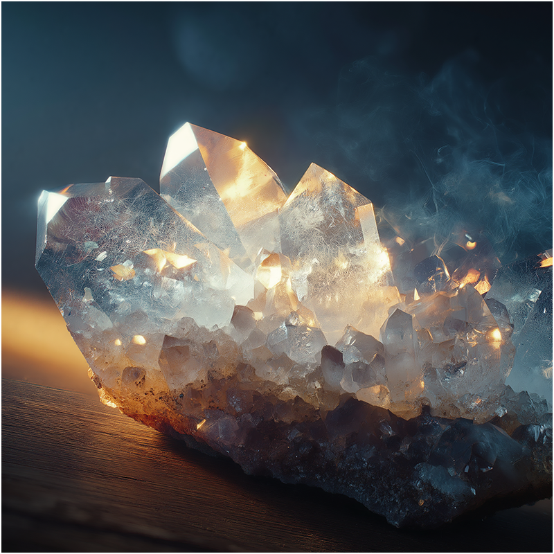
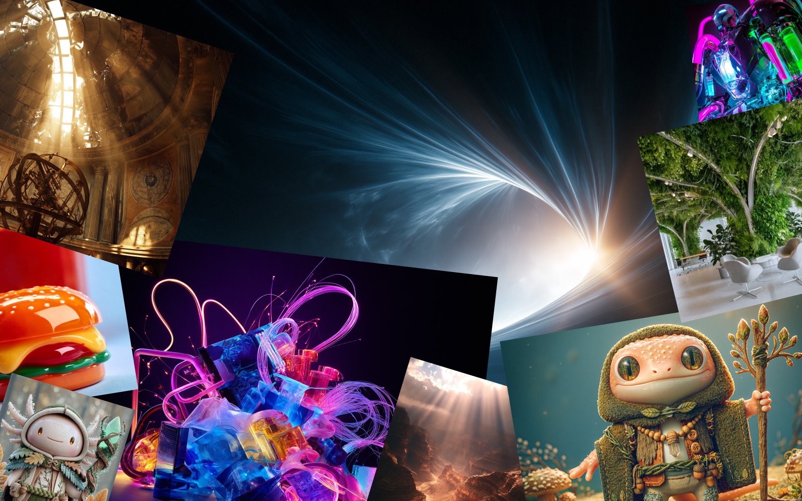
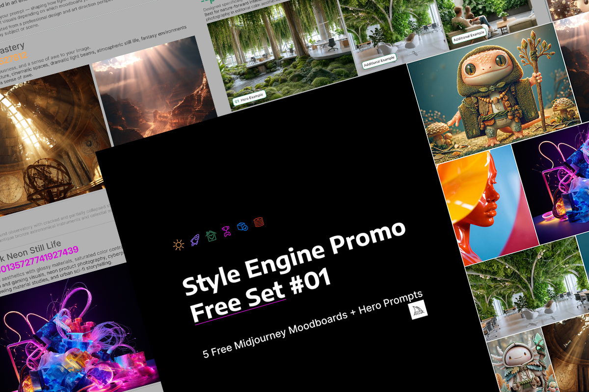
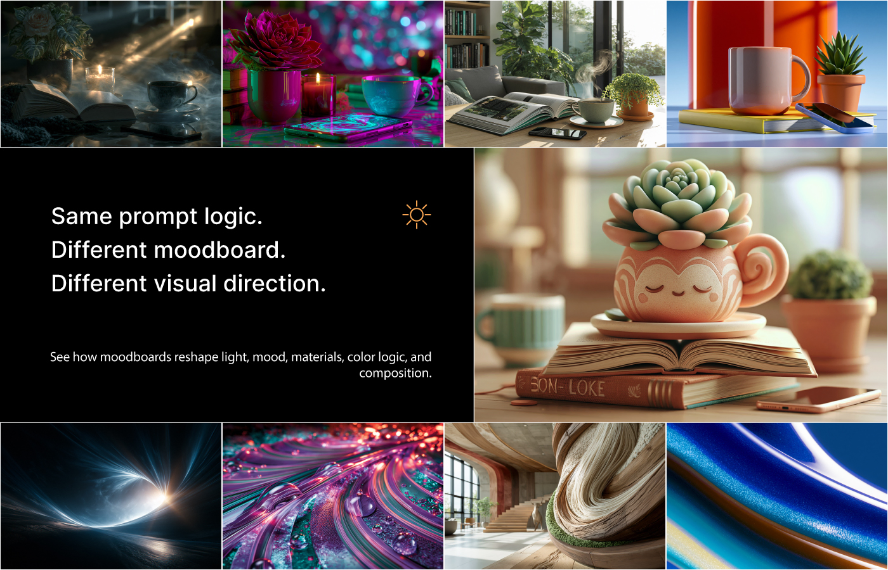
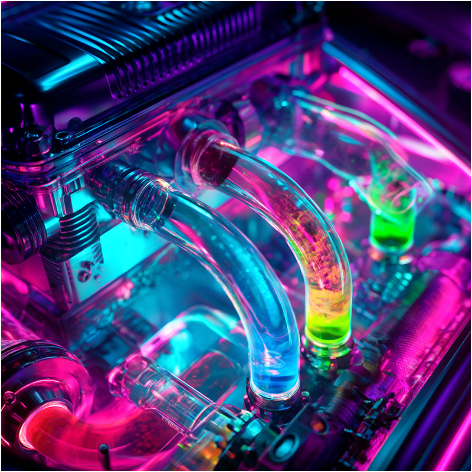
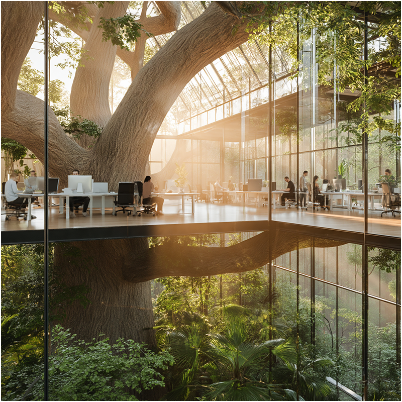
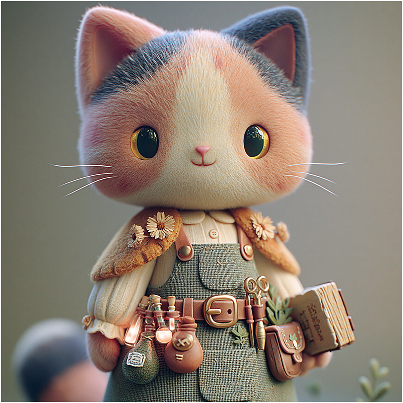
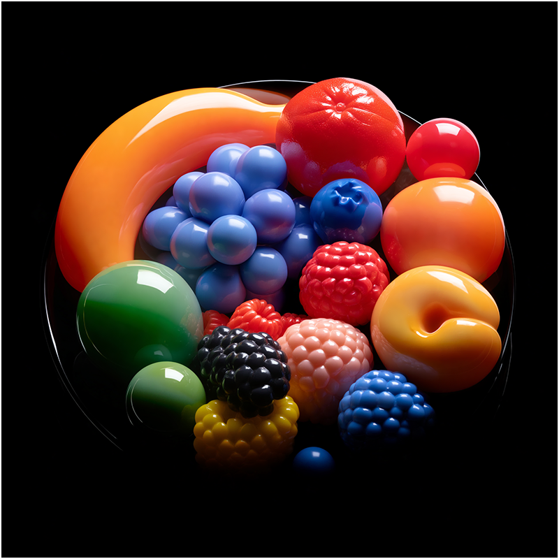
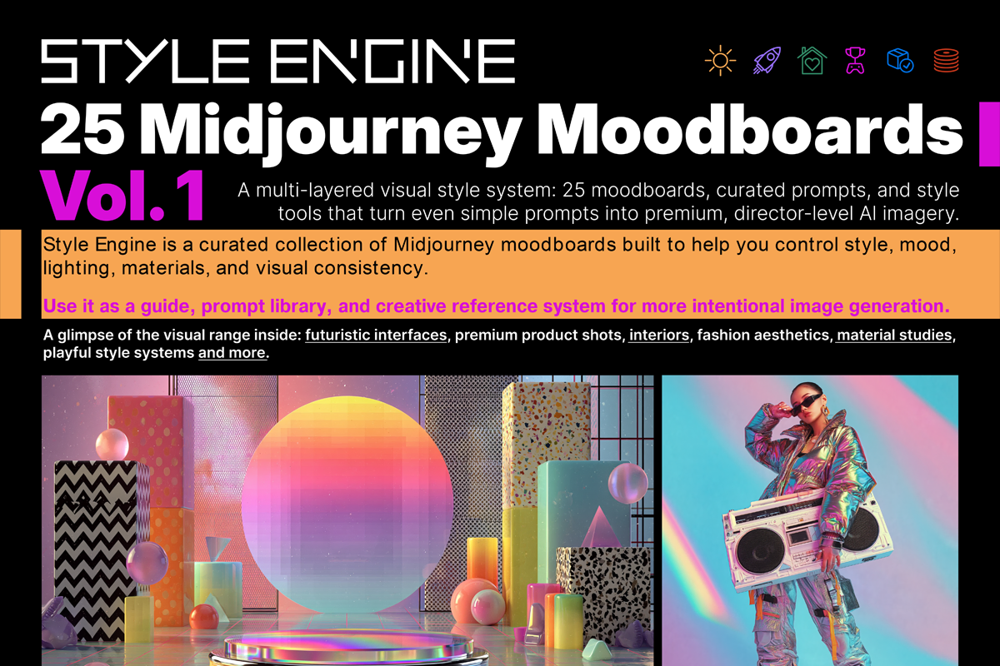

Volumetric God Rays
Dramatic light beams, atmosphere, cinematic depth, and awe.
Free AI image style-control starter kit
Style Engine Promo Free Set #01 is a free Midjourney moodboard starter kit with 5 moodboard codes, 5 hero prompts, visual examples, a copy-paste prompt file, and a quick cheat sheet.
Use it to explore how moodboards can reshape light, mood, materials, color logic, atmosphere, and overall visual direction in Midjourney.
Free on Gumroad: enter 0 in the price field and use your current email to receive the download link.

Quick answer
Style Engine Promo Free Set #01 is a free resource for AI image creators who want to understand how Midjourney moodboards affect visual style. It includes five selected moodboard codes, hero prompts, visual examples, and a cheat sheet that shows how to use and combine moodboards correctly.
What you get
The free set is designed as a small but practical test kit. It gives you enough material to see how moodboards behave without needing to start from a huge prompt library.

How it works
A moodboard code works like a style direction layer. Add it to your Midjourney prompt and it can influence lighting, atmosphere, material quality, color mood, and composition.
Instead of endlessly rewriting the same prompt, you can guide the image with a stronger visual signal and compare how different moodboards transform the same idea.

Included in the free set
The free set gives you a small but varied range of moodboard behavior: cinematic light, neon still life, biophilic interiors, cute character visuals, and glossy material studies.

Dramatic light beams, atmosphere, cinematic depth, and awe.

Glossy materials, saturated neon contrast, and futuristic energy.

Green living interiors, organic architecture, and calm editorial atmosphere.

Cute character concept art, playful personality, and charming worldbuilding.

Bold glossy surfaces, sculptural object transformation, and vibrant materials.
How to download
Gumroad may ask you to enter a price even for a free product. To get this set for free, enter zero in the price field.
Open the Gumroad page.
Enter 0 in the price field.
Continue with your current email address.
Receive the download link by email.

Want the full system?
The free set is a starting point. The full Style Engine Vol. 1 expands the idea into a complete visual style system with 25 curated moodboards, 77 prompts, visual guide, prompt library, cheat sheets, Notion package, and visual comparison sheet.
FAQ
Midjourney moodboards are visual style references that can be applied to prompts using moodboard codes. They help guide the image toward a stronger style direction.
Yes. Open the Gumroad link, enter 0 in the price field, and use your current email address to receive the download link.
Yes. The moodboard codes are intended for use inside Midjourney. The PDF and prompt files are useful as references, but the codes require access to Midjourney.
Yes. Use --p only once, then add additional moodboard code IDs after the first code. The free set includes a quick note showing the correct format.
No. Style Engine is an independent creator resource. It is not affiliated with, endorsed by, or sponsored by Midjourney.
Start with the free set
Test the workflow, compare the visual directions, and see how moodboards can help you move from random prompting to more intentional AI art direction.
Download the Free Style Engine Set